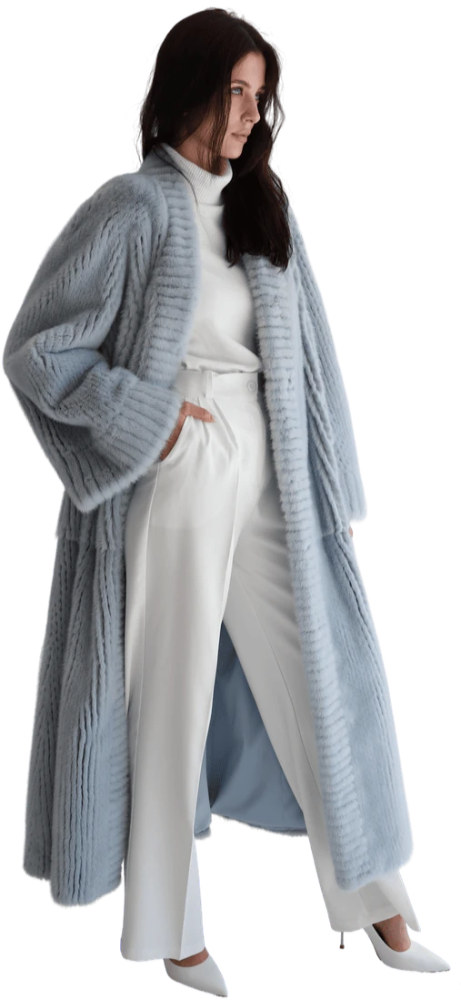
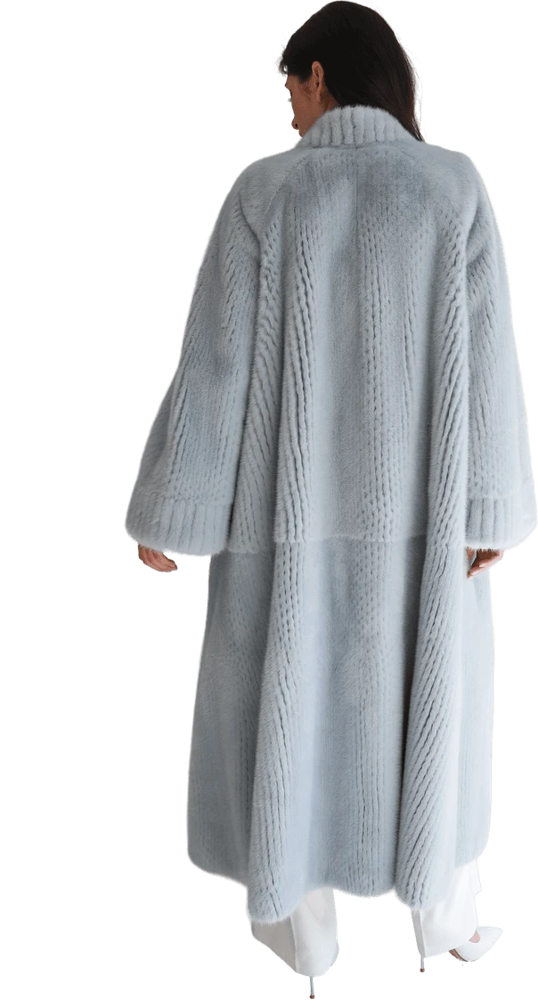
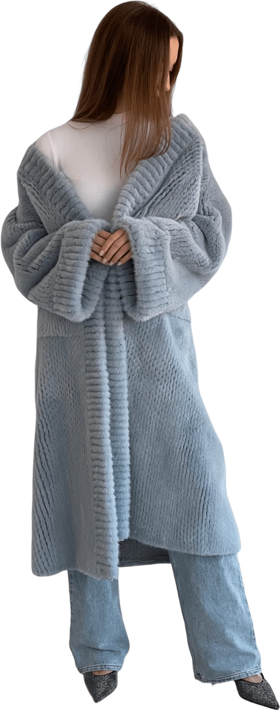
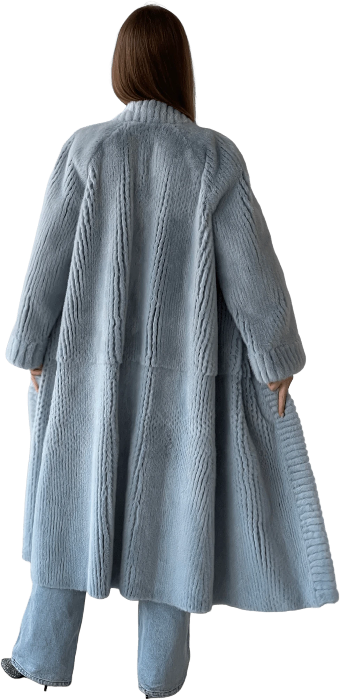
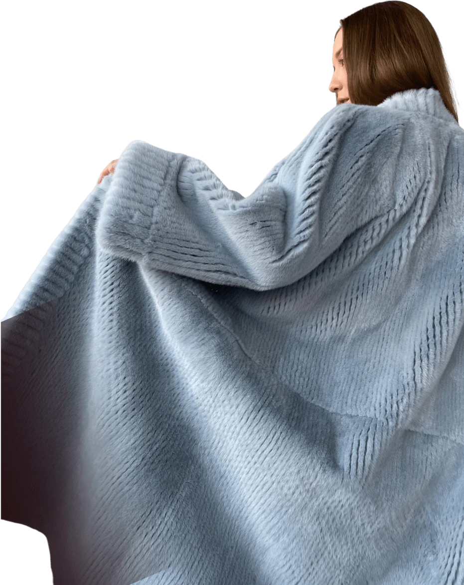
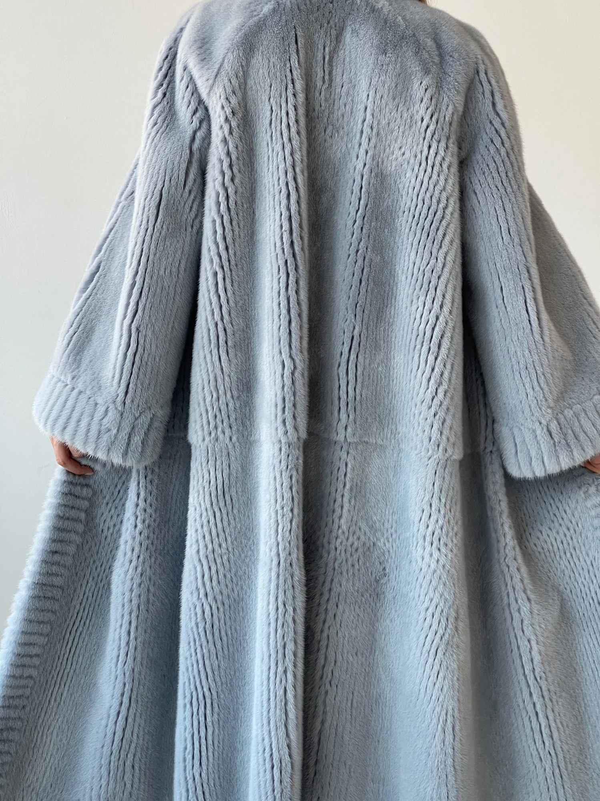
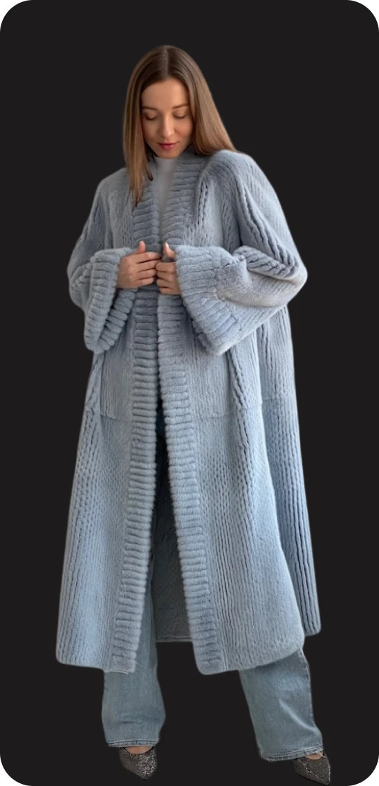
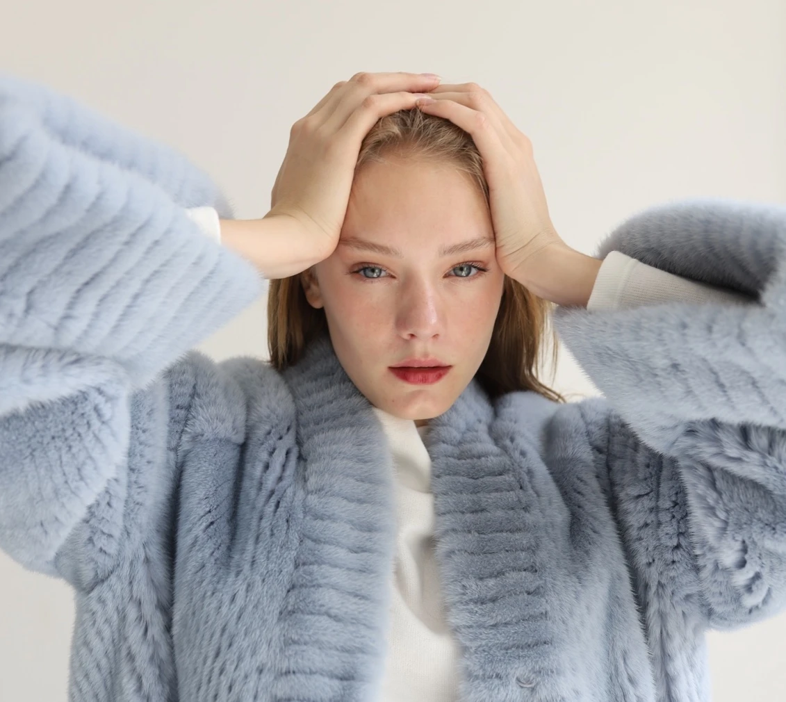

Шубы
Расклешённая шуба
От плеча полотно мягко расширяется к подолу. Ручная перфорация придаёт норке подвижность вязаного кардигана.
- Материал
- Норка
- Силуэт
- Расклешённый
- Техника
- Ручная перфорация
- Подкладка
- Натуральный шёлк по умолчанию
Изделие и детали
















